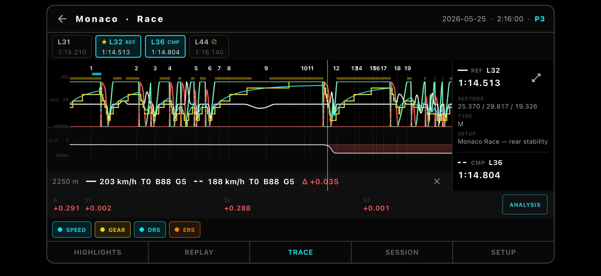

Free
- The Dashboard's full-screen live trace
- Session History TRACE for your most recent session
How it works
Pick laps, compare a reference against another lap, zoom and pan, and go full screen, live on the Pit Wall or later in Session History.
Both TRACE views share the same chart, gestures and lap chips, so what you learn in one works in the other.

In-laps, out-laps and an unfinished last lap appear in the list, marked as partial, but they're never offered as a reference or comparison lap.
The toggles under the chart (SPEED, GEAR, DRS, ERS) add or hide those lines. A channel the game didn't send is not drawn, and its toggle says it was not recorded.
The sidebar beside the chart shows the reference lap's time, sectors, tyre and setup, and the comparison lap's time. On a phone held upright, the same details move to a band above the chart.
Tap the expand control in the chart's top-right corner. The trace fills the screen with its legend and controls; on an iPhone it prefers landscape. Tap the close control to return exactly where you were.
For F1 26 sessions that recorded Active Aero or ERS energy data, Session History's TRACE adds an ENERGY & PACE row. It opens up to four findings from your comparable laps, each with what happened, why it matters and what to try next.